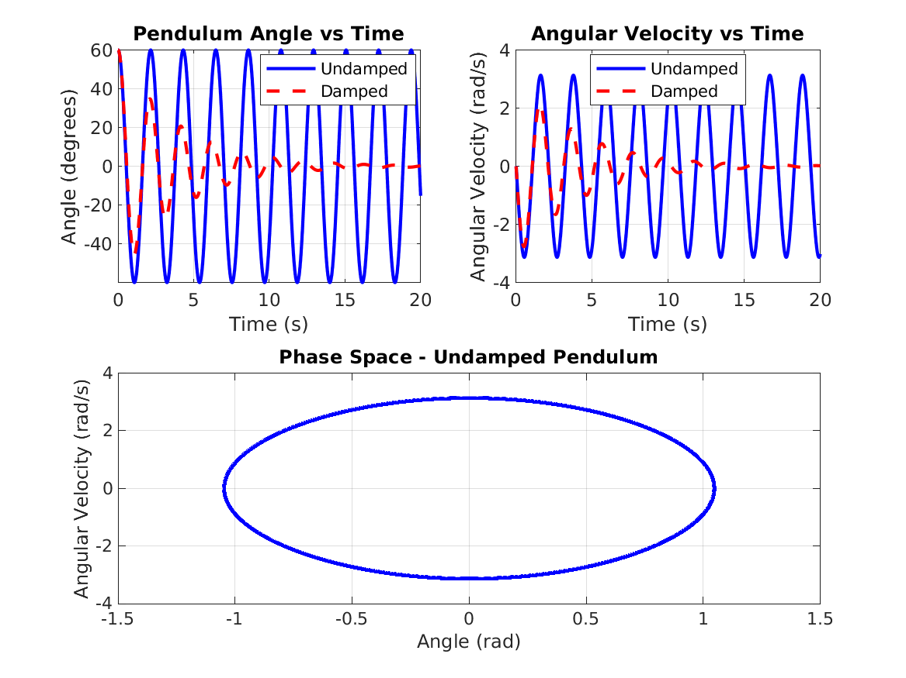
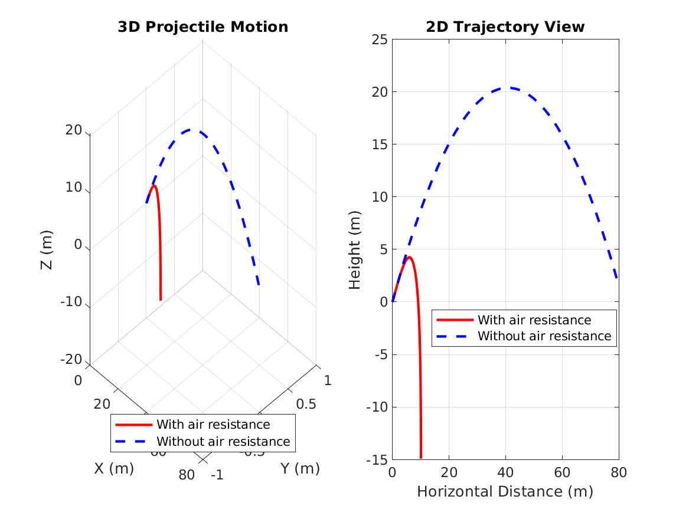
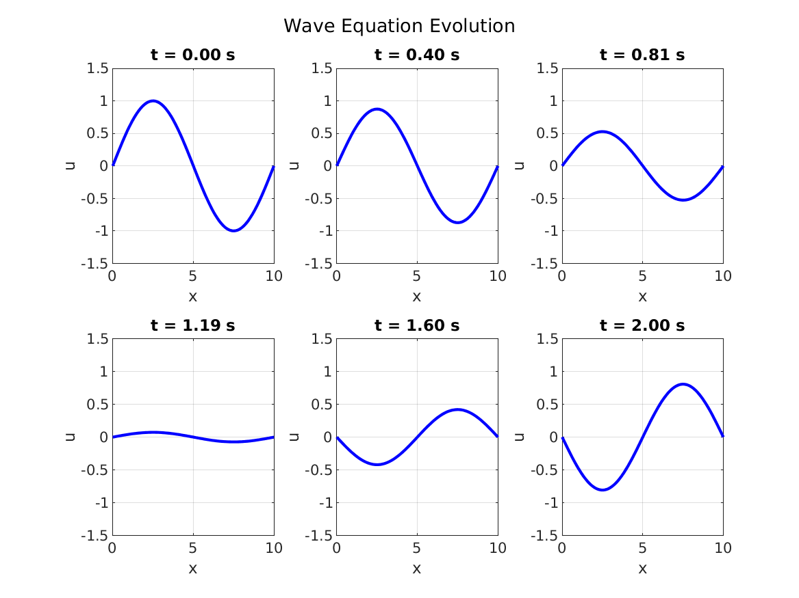

This project provides physics simulations including pendulum motion, particle dynamics, and wave equation solvers.
Comparison of damped and undamped pendulum motion, showing angle, angular velocity, and phase space.
3D projectile motion simulation comparing trajectories with and without air resistance.
Evolution of a sinusoidal wave over time, demonstrating the finite difference solution.
% Simulate a pendulum
L = 1; % Length in meters
theta0 = pi/4; % Initial angle
omega0 = 0; % Initial angular velocity
[t, theta, omega] = pendulum_simulation(L, theta0, omega0, [0 10]);
% Simulate particle motion
mass = 1;
F = @(t,x,v) [0; 0; -9.81*mass]; % Gravity
[t, pos, vel] = particle_dynamics(mass, F, [0;0;10], [5;0;5], [0 2]);
Run run_all_demos in MATLAB to see interactive demonstrations of all simulations.
See the GitHub repository for source code and more examples.